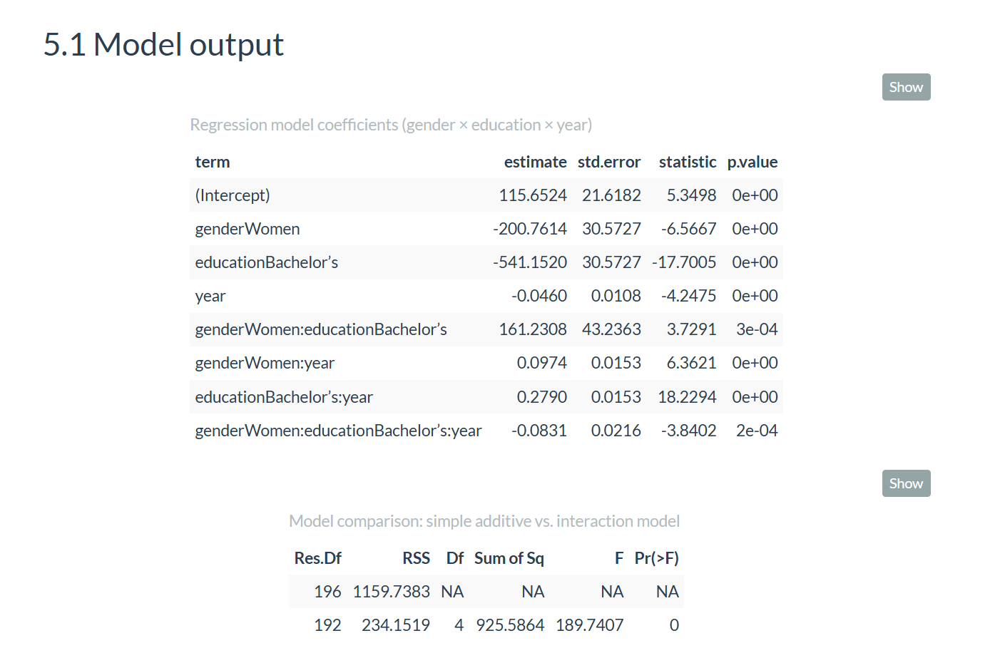

Education, Gender and Wage Inequality (1973-2022)

Overview
Analyzed 50 years of wage data (1973-2022) to quantify how education and gender drive long-run income inequality. Built a full R workflow with data cleaning, trend visualization, wage-premium tracking, and interaction-term regression to reveal how bachelor wages, gender gaps, and inequality evolve over time. Clear, consulting-style analysis with interpretable economic insights.
What I Did
- Defined the business objective, metric targets, and analysis scope.
- Built and validated the data, modeling, and reporting workflow.
- Packaged outputs for stakeholder interpretation and decision support.
Results/Impact
Delivered an analysis workflow with decision-ready outputs and reusable artifacts.
Tech Stack
- Data Analysis, Inequality Research, Labor Economics, R, Visualization
Deliverables
- Project brief: (add file)
- Slides/report: (add file)
- Dashboard/model file: (add file)
- SQL/notebook/code bundle: (add file)
Project Notes
Description: Analyzed 50 years of wage data (1973-2022) to quantify how education and gender drive long-run income inequality. Built a full R workflow with data cleaning, trend visualization, wage-premium tracking, and interaction-term regression to reveal how bachelor wages, gender gaps, and inequality evolve over time. Clear, consulting-style analysis with interpretable economic insights. Skills Demonstrated: Data Analysis, Inequality Research, Labor Economics, R, Visualization Project Status: Planning
I like understanding why systems work the way they do. Money, education, and opportunity shape so much of a person-s life, and I have seen firsthand how different those systems feel depending on where you grow up. Moving from Europe to the United States made those differences even more obvious.
As a first generation college student, wage inequality feels personal to me. It is not just an economics topic. It affects people I know and people like me.
So I wanted to create a clear and honest analysis that shows how wages changed across fifty years. I wanted something that feels like a consulting report a policy team could actually use. Something that shows what education really buys people over time and how gender interacts with all of it.
This project takes a dataset of real wages from 1973 to 2022 and builds a full analytical workflow.
It includes:
- reshaping the data into a tidy format
- visualizing long run wage paths
- computing the college wage premium
- running a regression model with interaction terms
- interpreting the economic meaning
Everything works together to answer one question.
How do education and gender shape long run wage inequality in the United States
1. Data Tidying
The dataset originally stores each education group in its own column. I converted it into a long format with the standard layout.

This format made visualization and modeling straightforward.
2. Trend Visuals
I created line charts showing wages from 1973 to 2022 for five education levels, separated by gender. The patterns are clear.

The main takeaways:
- men earn more at every level
- bachelor and advanced degree wages pull far ahead
- the high school to bachelor gap expands over time
3. College Wage Premium
The premium is simply bachelor wage minus high school wage.

The premium grows every decade for both genders.
4. Regression Model
I used a regression model that includes interactions between gender, education, and year to capture how these factors move together.

This lets the model answer exactly how much faster bachelor wages grow compared to high school wages and how gender changes that growth.
1. Education Pays
In 2022, men with a bachelor degree earned about 49.01 dollars per hour. Men with only a high school diploma earned about 24.08 dollars per hour. Women follow the same structure with lower wages at every level.

3. Women Catch Up Slowly
Women-s wages grow about 0.097 dollars per hour per year faster than men-s. This closes the overall gap a little, but not enough to match the patterns for men.

4. Men Still Benefit More From Higher Education
The three way interaction is negative. This means the education advantage grows faster for men than for women. Both groups gain. Men gain more.
1. Inequality grows slowly until it does not
Small yearly differences turn into massive long run gaps.
2. Gender affects wages even after you control for education
The model keeps showing this pattern.
3. Interaction terms matter
They reveal the deeper structure behind long run changes.
4. Clean data is everything
The tidy dataset made the analysis feel smooth and predictable.
5. This is real consulting work
Clear question. Clean data. Interpretable model. Actionable insights.
data raw and cleaned wage data
analysis descriptive stats and visuals
model regression and diagnostics
insights narrative interpretation
report final pdf write up- add race and ethnicity
- include non linear time trends
- add occupation controls
- create dashboard for policymakers
This project reminded me why I enjoy analytics. A fifty year dataset can feel huge, but with the right structure you can turn it into a simple and meaningful story. Education opens real opportunities. Gender still influences how those opportunities pay out. And the data makes that very clear.
If you want to talk about wage inequality or long run economic trends, I am always open to it.
Markuss Saule